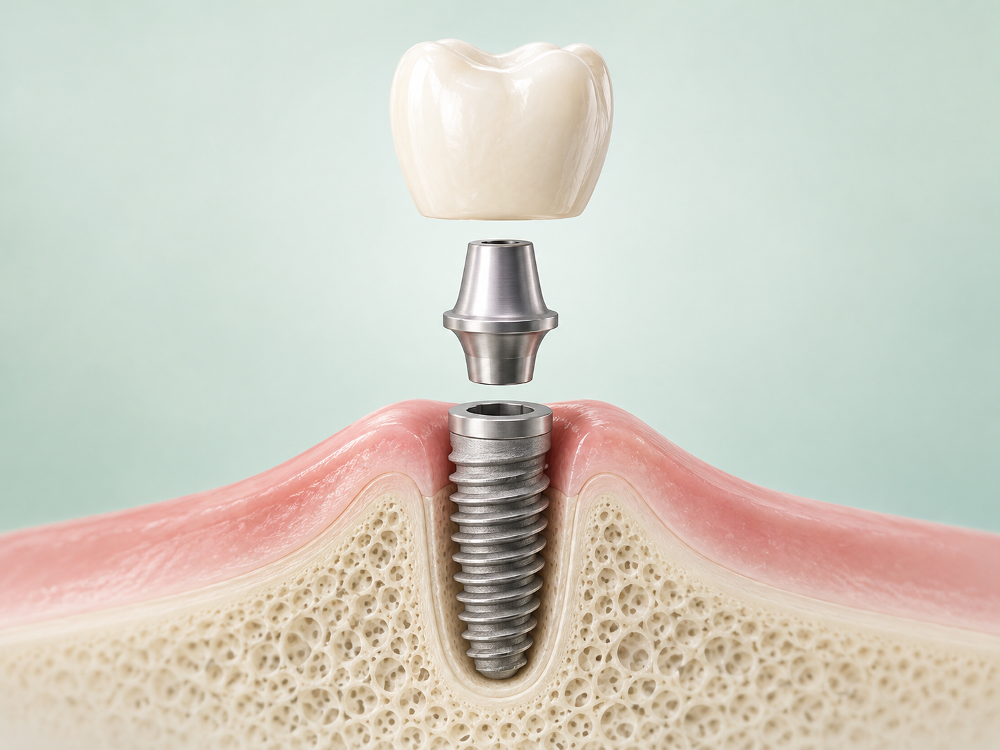
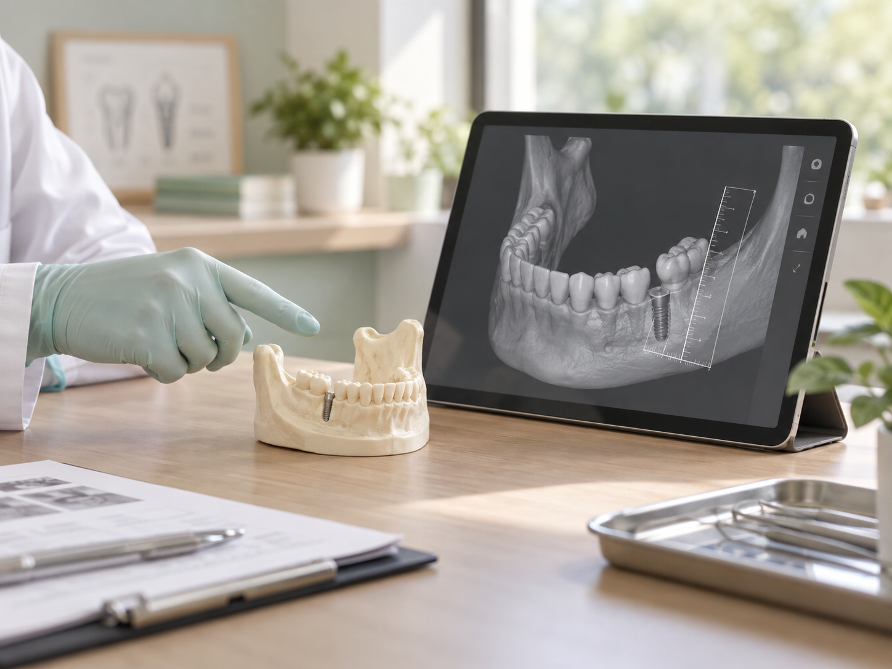
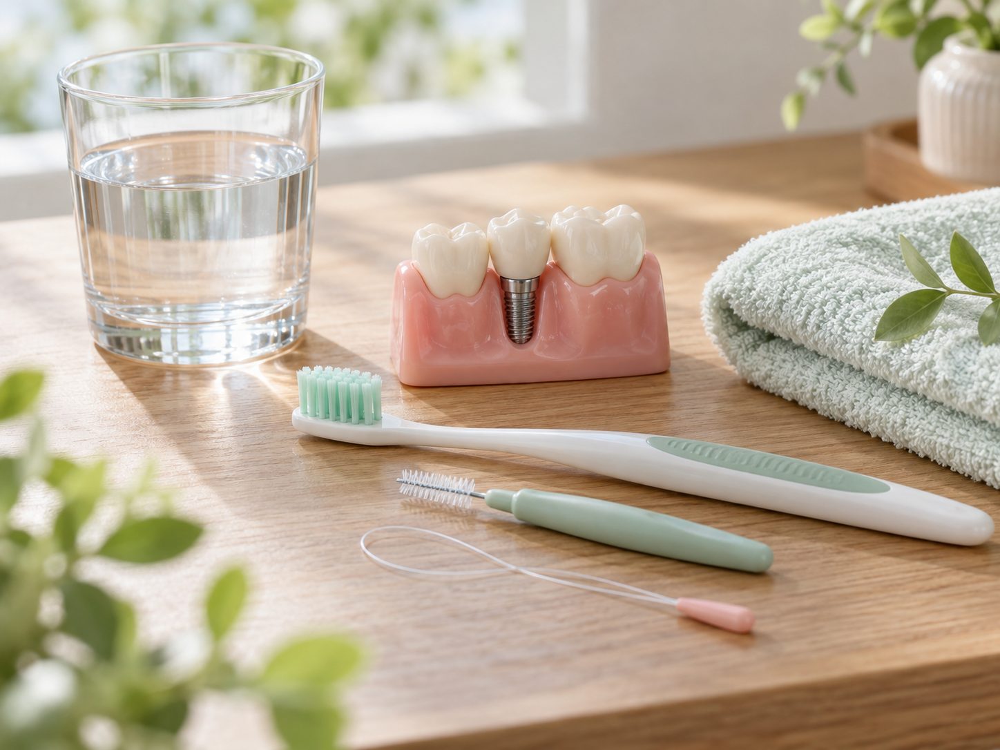

1. 上方牙冠
依缺牙位置、咬合與美觀需求設計的假牙部分。
先了解缺牙位置、牙周與骨質條件、咬合及整體健康，再一起討論人工植牙或其他重建方式。
人工植牙是將人工牙根植入齒槽骨，待骨整合與組織穩定後，再連接上方的假牙。它是缺牙重建方式之一，但並不是看到缺牙就能直接進行；是否適合，仍需檢查缺牙區、牙周健康、骨質條件、咬合及全身健康。

依缺牙位置、咬合與美觀需求設計的假牙部分。
連接人工牙根與上方牙冠，協助構成完整修復體。
植入齒槽骨內，待組織穩定後承接上方修復體。
希望重建缺牙位置，並避免為了固定牙橋而修磨兩側健康鄰牙者，可評估植牙可能性。
需一起考量缺牙範圍、剩餘牙齒、清潔能力與整體咬合，不一定是一顆缺牙對應一支植體。
部分情況可評估以植體增加假牙支撐與穩定，但實際方式仍須依口腔條件判斷。

評估會把缺牙位置、牙周狀況、骨質與空間、鄰牙、咬合及全身健康放在一起看。影像只是其中一部分，仍需配合臨床檢查與病史，才能討論適合的重建方式。
若有牙周發炎、牙菌斑控制不佳等情形，通常需要先處理並建立穩定的清潔習慣。
透過臨床及影像檢查，了解骨頭高度、寬度、鄰牙與重要解剖構造的位置。
慢性病控制、抽菸習慣及部分藥物都可能影響評估，應如實告知醫師，由醫師綜合判斷。
實際步驟與所需時間會依個人條件、是否需要其他處置及組織癒合情形不同。以下是便於理解的概略流程。
了解缺牙原因、口腔健康、影像與整體病史。
說明重建選項、可能風險、費用與預估階段。
依規劃進行手術，術後按醫囑照護與回診。
等待骨整合；時間會依部位與個人狀況而異。
完成上方假牙後，持續清潔與定期檢查。
| 方式 | 常見考量 | 需要一起評估 |
|---|---|---|
| 人工植牙 | 不需以鄰牙作為牙橋支撐，但屬侵入性治療，治療期與費用需納入考量。 | 骨質、牙周、病史、清潔與手術風險。 |
| 固定牙橋 | 利用鄰牙支撐缺牙區的假牙，通常需要修磨支撐牙。 | 鄰牙健康、缺牙範圍、受力與清潔。 |
| 活動假牙 | 可自行取下清潔，適用情況與設計範圍較廣。 | 穩定度、異物感、支撐牙與日常適應。 |
沒有一種方式適合所有人。選擇的重點，是在口腔條件、生活需求、治療風險與長期維護之間找到合適的平衡。
日常清潔要碰得到植體周圍與鄰接面；適合使用哪一種牙刷、牙間刷或牙線，應依假牙設計與個人狀況由牙科人員指導。

依照醫師與牙科人員指導清潔植體周圍。
定期回診檢查牙齦、咬合與假牙狀況。
若有腫痛、出血、鬆動或清潔困難，儘早回診。
避免讓過度咬合力量與不良習慣持續影響植體。
手術通常會在麻醉下進行；術後感受因手術範圍與個人狀況不同，醫師會說明照護與用藥方式。
從評估、手術、骨整合到完成假牙，會依部位、骨質、癒合及是否需要其他處置而不同，不能只用固定天數回答。
需要先確認骨量、缺損範圍與風險；部分情況可能有其他處置或重建方案，但須由醫師評估。
植體和假牙本身不會像自然牙蛀牙，但周圍組織仍可能發炎或流失，因此清潔與定期檢查不能省略。
不是只看疾病名稱，而是看控制情形、用藥與整體風險。請完整告知醫師，再由醫師評估。
缺牙範圍、檢查結果、治療設計、假牙材料與是否需要額外處置都可能影響費用，應在評估後取得個別說明。
如果還不確定人工植牙是不是適合自己，可以先讓醫師了解目前的缺牙狀況，再一起討論下一步。
點我預約